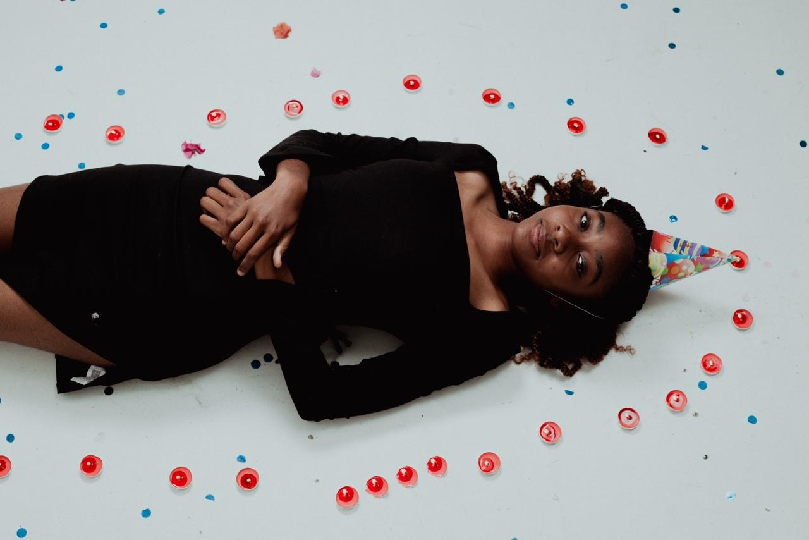

Um convite para atravessar este momento

Belonging in spaces between, ignoring these boxes I used to fit into. Just a way to remind myself that I exist, and to be grateful for this becoming eighteen.
Em breve chegará o meu décimo oitavo aniversário. E, pela primeira vez, sinto que não estou apenas a celebrar um número, mas a atravessar um limiar. Este site é a materialização de meses de espera, de preparação e, acima de tudo, de transformação. É a prova de que este dia é real. De que eu cheguei até aqui.
Os 17 não foram barulhentos. Não foram cheios de grandes acontecimentos ou histórias que parecem filmes, como os Sweet Sixteen. Mas foram verdadeiros.
Senti coisas que nunca imaginei que sentiria, desde amor até ódio. E isso não foi mágico como nos livros — foi confuso, assustador. Foram os tipos de sentimentos que nos obrigam a fugir de nós mesmos. E, talvez por isso, eu tenha escolhido ignorá-los. Nem tudo o que sentimos precisa ser vivido e isso também é crescer.
Mas, em meio a tudo isso, encontrei algo que foi muito significativo: a amizade. Com a Edvânia, descobri o verdadeiro significado de heart to heart com amigos, não como algo romântico, mas como uma conexão sincera, leve e segura. Daquelas que não exigem explicações, apenas presença. Fiz novas amizades. Deixei outras para trás. E entendi que crescer também é saber escolher quem fica e aceitar quem já não pertence.
A vida, no entanto, também me apresentou desafios que eu não podia ignorar. O divórcio dos meus pais foi um deles. Não foi fácil, foi transformador. Obrigou-me a ver o mundo com outros olhos, a entender o valor de coisas que antes pareciam garantidas: um lar estável, o amor dentro de casa, a presença constante de uma família unida. E, ao mesmo tempo, fez-me valorizar ainda mais as pessoas que estiveram ao meu lado, meus amigos, apoios, refúgios. Os 17 foram, acima de tudo, um ano de amadurecimento silencioso. De aprender sem perceber que estava a aprender, de crescer sem anunciar que estava a crescer.
À beira do fim do ensino médio, com o coração dividido entre o medo e a ansiedade boa de quem está prestes a começar algo novo. As universidades, os caminhos, os sonhos que durante tanto tempo foram apenas ideias… tudo começa a ganhar forma. Se antes eu estava a aprender a sobreviver, e depois a florescer, agora, eu começo a entender o que significa tornar-me.
O Majestic Eighteen não é sobre perfeição, mas sobre consciência e presença. Sobre aceitar que a vida nem sempre será bonita, mas ainda assim pode ser significativa. Então, este é o meu convite: não apenas para entrarem neste baile… mas para entrarem neste momento comigo.
E, se ao percorrerem este espaço encontrarem um pedaço de mim — espero que, de alguma forma, encontrem também um pedaço de vocês.